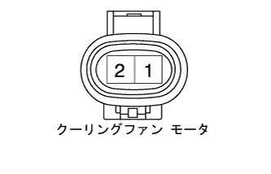

Cooling Fan Motor (2AZ-FE) Inspection |
| 1. Cooling Fan Motor |
 |
Check that the fan motor (5 fan blades) rotates smoothly when the battery is connected to its connector.
Using SST (Toyota electrical tester), measure the current while the motor is rotating.